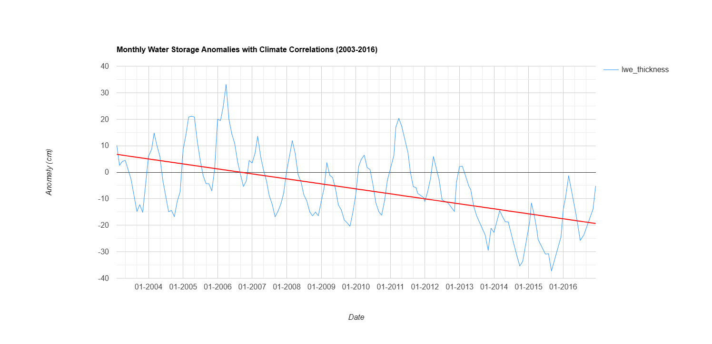
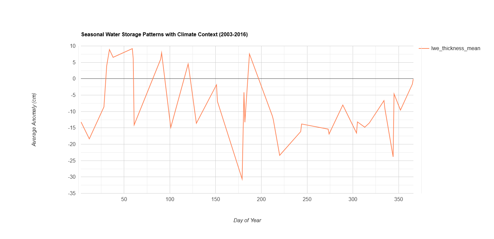
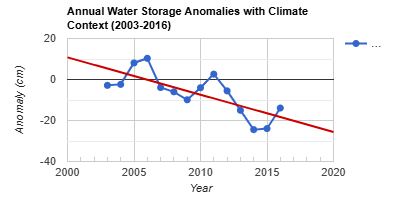
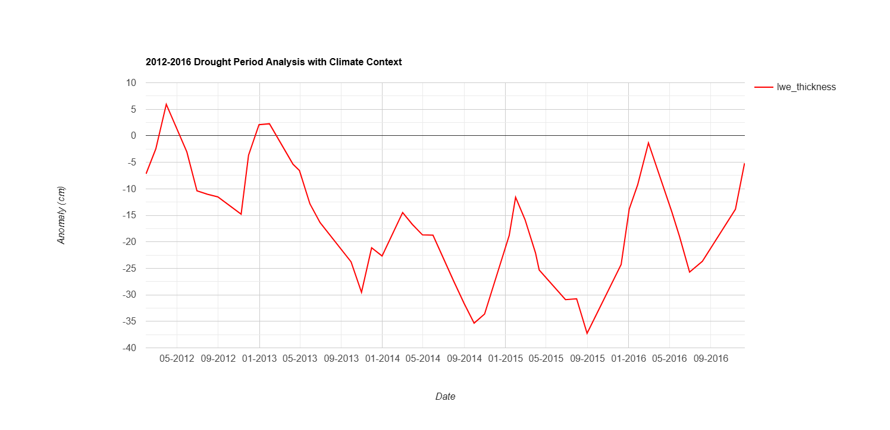
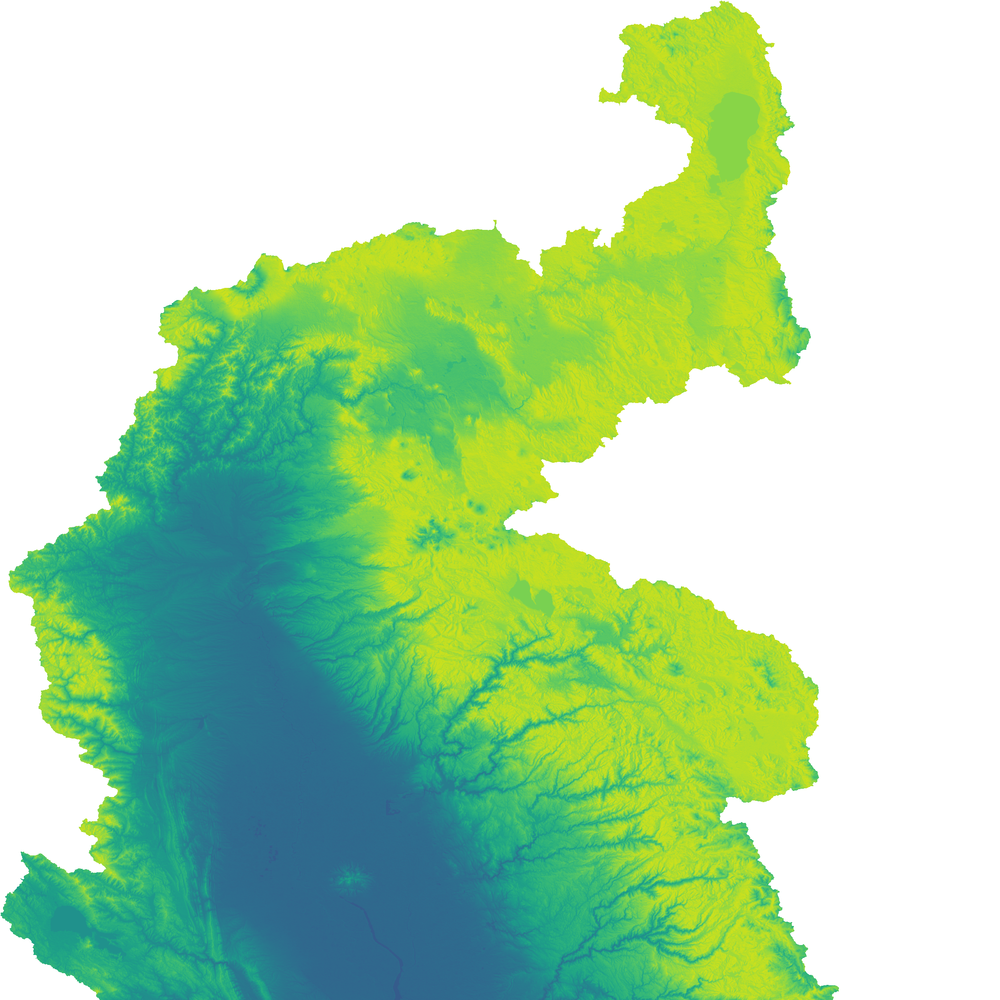
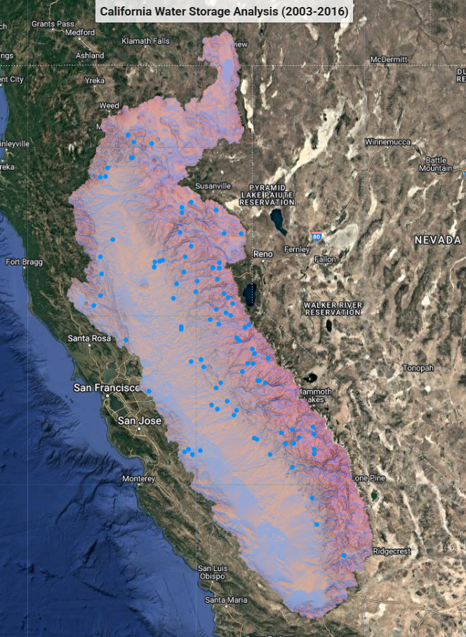

California Water Resources Analysis
Project Overview
This Google Earth Engine Script tracks California's water resources using NASA's GRACE (Gravity Recovery and Climate Experiment) satellite data. Through the payload, it is possible to detect changes in Earth's gravity field caused by water movement, allowing us to "see" underground water storage changes that would otherwise be invisible. By combining this satellite data with climate measurements and watershed models, this tool helps visualize and understand California's watershed challenges.
Technical Approach
This analysis focuses on California's Central Valley, the agricultural heartland that depends critically on water resources. Here's how the script works:
- GRACE Satellite Data: The twin satellites measure tiny variations in Earth's gravity caused by water mass changes. When groundwater depletes, the satellites detect a subtle decrease in gravitational pull, allowing us to map deviations from normal water levels, in this case water storage anomalies.
- Terrain Analysis: Using USGS SRTM (Shuttle Radar Topography Mission) data, the script analyzes elevation, slope and aspect to understand how water flows across landscapes and where it naturally accumulates.
- Climate Integration: NASA's DAYMET climate data provides daily temperature and precipitation measurements, helping us correlate weather patterns with water storage changes.
- Reservoir Monitoring: The script tracks major reservoirs capacity and actual water levels, helping us understand the amount of available water stored in reservoirs.
- Time Series Analysis: By examining data from 2003-2016, we can see long-term trends, focus on drought periods and analyze past impact of water storage management or even predict future scenarios when furthering the analysis.
- Climate Correlation: The algorithm identifies relationships between climate factors (like precipitation and temperature) and water storage changes, helping predict future scenarios.
Interactive map
The Earth Engine app below shows the GRACE water storage layers and charts for the Central Valley. It computes the layers live, so they can take a minute or two to appear.
This visualization shows water storage anomalies across California's Central Valley watersheds. The red areas indicate significant water deficits (drier than normal), while blue areas show water surpluses. The intensity of color represents the severity of the condition. This map helps identify regions under water stress that might not be obvious from surface observations alone. View on Google Earth Engine (opens in a new tab)

Monthly water storage anomalies from GRACE satellite data (2003-2016) across the Central Valley watersheds. The blue line shows liquid water equivalent thickness (LWS) anomalies in centimeters, with the red trendline indicating the overall declining water storage.

The seasonal analysis chart shows day-of-year water storage patterns averaged across 2003-2016. The orange line represents how water storage typically fluctuates throughout the year in California's Central Valley. With this we can identify recharge and depletion periods within annual cycles.

The scatter plot shows annual water storage anomalies from 2003-2016, with each point representing the yearly average LWE thickness anomaly. The red trendline illustrates the significant multi-year decline in water storage, particularly during the 2012-2016 drought period.

This analysis of the 2012-2016 drought period shows the water storage deficits (red line) across California's Central Valley. The chart displays monthly LWE thickness anomalies during this drought period helping us understand key drought intensification points and minimal recovery periods.

Here you can see the terrain visualization of the northern part of the Central Valley which combines elevation data with slope and aspect analysis to create a comprehensive view of California's Central Valley watersheds, as a foundation for the water storage analysis.

The blue dots showcase the location of reservoirs across the Central Valley that are used to back up this analysis.